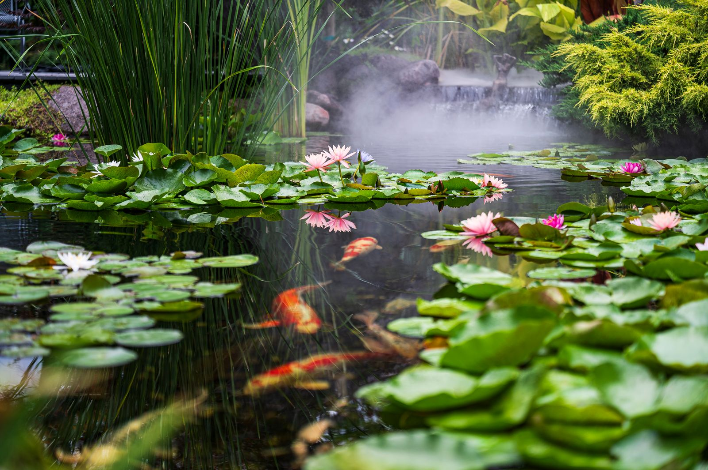
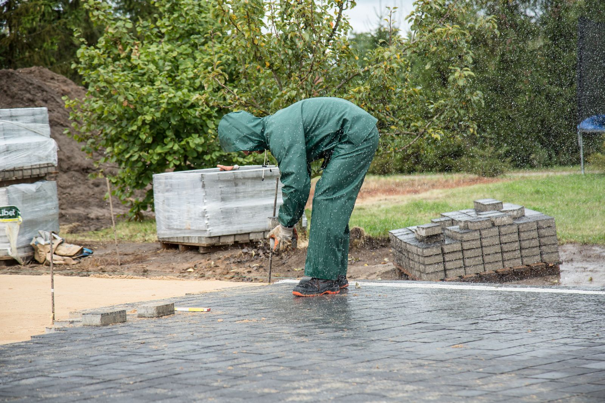
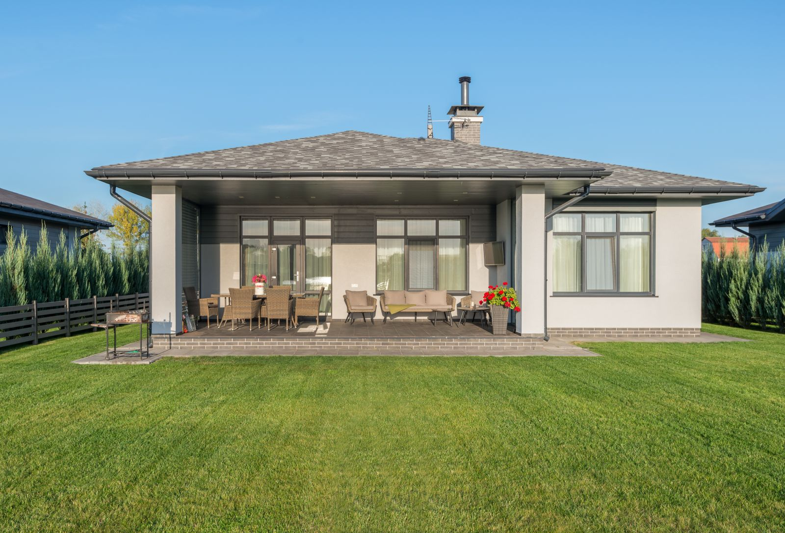
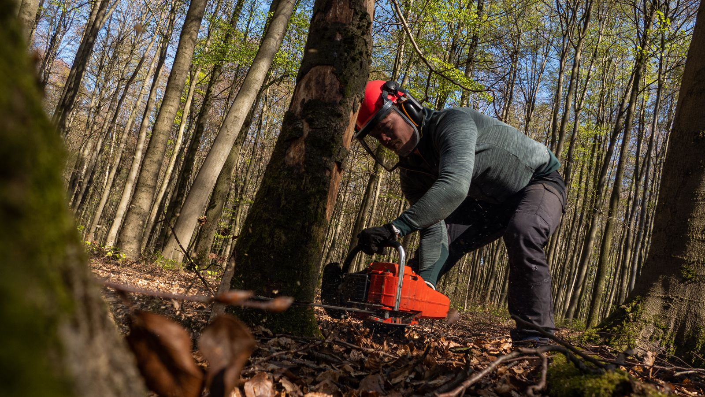

Garten- und Landschaftsbau · Mandelbachtal · Saarpfalz-Kreis
Kreative Gartengestaltung – natürlich aus Mandelbachtal.
Konrad Massing und sein Betrieb gestalten, bauen und pflegen Gärten in der Region Saarbrücken – zuverlässig, fachgerecht, preiswert. Seit über 20 Jahren.
Langgasse 45 · 66399 Mandelbachtal-Erfweiler-EhlingenTermine nach Vereinbarung
- 20+Jahre Garten- und Landschaftsbau in der Region
- InhabergeführtKonrad Massing ist Ihr direkter Ansprechpartner
- Eigener FuhrparkLKW mit 3-Seiten-Kipper, Radlader, 2 Anhänger
- Privat & GewerbeVom kleinen Auftrag bis zur Neuanlage
Garten- und Landschaftsarbeiten aller Art – auch Kleinarbeiten.
Vom Pflasterweg bis zum Gartenteich, von der Hecke bis zur Baumfällung: Wir übernehmen die Arbeiten rund um Ihr Grundstück aus einer Hand.
-
01
Verbund- und Natursteinarbeiten
Pflaster- und Steinarbeiten für Wege, Einfahrten und Terrassen.
-
02
Natursteinmauern
Mauern aus Naturstein – zur Hangbefestigung oder als Gestaltungselement.
-
03
Gartenteiche
Anlage von Gartenteichen – ein Stück Natur vor der Haustür.
-
04
Gartenpflege und -unterhaltung
Laufende Pflege von Gärten und Grünanlagen, das ganze Jahr.
-
05
Neu- und Umgestaltung
Neuanlage und Umgestaltung von Gärten – vom Entwurf bis zur Fertigstellung.
-
06
Baumfäll- und -schnittarbeiten
Fällen und Schneiden von Bäumen, inklusive Abtransport.
-
07
Mäharbeiten
Mäharbeiten für Rasen- und Grünflächen – auch regelmäßig.
-
08
Kellertrockenlegung
Trockenlegung feuchter Keller, Isolier- und Estricharbeiten.
-
09
Bau- und Kleinarbeiten am Haus
Bau-, Abriss- und Umbauarbeiten in und am Haus.
Kein Auftrag ist zu klein.
Ob eine neue Einfahrt oder nur eine Hecke, die weg muss: Rufen Sie an, wir schauen uns das an und machen Ihnen ein Angebot.

Eigene Maschinen, kurze Wege, ein Ansprechpartner.
Wir arbeiten mit eigenem Gerät und eigenem Fuhrpark. So bleiben Termine verlässlich und der Abtransport von Erde, Schnittgut und Bauschutt ist gleich mit erledigt.
-
LKW mit 3-Seiten-Kipperplus zwei Anhänger für Material und Abtransport
-
Radlader und alle gängigen Gartengerätefür Erdarbeiten, Pflaster und Pflege
-
Mandelbachtal und UmgebungErfweiler-Ehlingen, Saarpfalz-Kreis – südöstlich von Saarbrücken
-
Für Privat- und GewerbekundenHausgarten, Firmengelände oder Grünanlage
Seit über 20 Jahren im Garten- und Landschaftsbau.
Garten- und Landschaftsbau Konrad Massing ist ein inhabergeführter Betrieb aus Erfweiler-Ehlingen in Mandelbachtal. Seit über 20 Jahren sind wir im Garten- und Landschaftsbau in der Region tätig – für Privathaushalte ebenso wie für gewerbliche Kunden.
Unser Anspruch ist seit jeher derselbe: kreative Gartengestaltung, zuverlässig und fachgerecht ausgeführt, zu einem fairen Preis. Dazu gehört für uns auch, Kleinarbeiten ernst zu nehmen und Bau- und Kleinarbeiten in und am Haus mit zu übernehmen.
Sie sprechen bei uns direkt mit dem Inhaber. Konrad Massing kommt vorbei, schaut sich Ihr Grundstück an und sagt Ihnen offen, was sinnvoll ist.
„Kreative Gartengestaltung. Zuverlässig, fachgerecht, preiswert.“ Motto von der bisherigen Website des Betriebs
Was wir für Sie anpacken.
Einblicke in die Bereiche, in denen wir täglich unterwegs sind – vom Rasen bis zur Terrasse.
Hinweis: Symbolbilder – echte Projektfotos des Betriebs werden hier eingesetzt.


Rufen Sie uns an – wir kommen vorbei.
Am schnellsten erreichen Sie uns telefonisch. Termine vor Ort nach Vereinbarung.
Adresse
Garten- und Landschaftsbau Konrad MassingLanggasse 45
66399 Mandelbachtal
Ortsteil Erfweiler-Ehlingen Route planen
Öffnungszeiten: Termine nach Vereinbarung – rufen Sie uns einfach an.